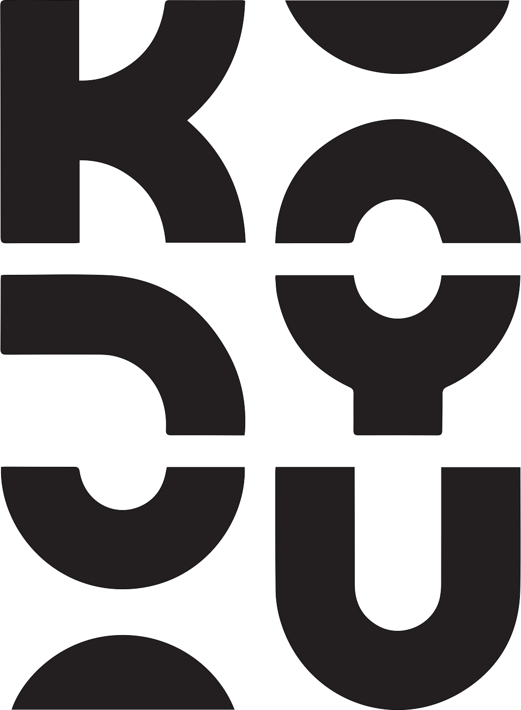
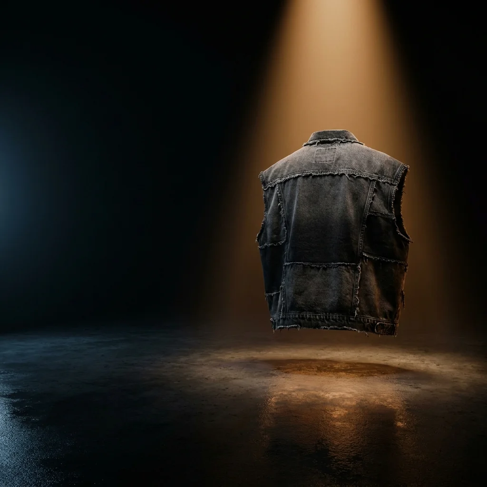
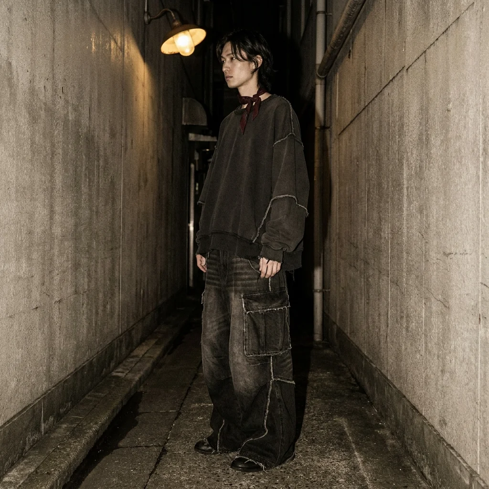

01 / VOLUME
Room to move.
Balloon proportions. Wide legs. A silhouette that takes up space.
KITSYUU / DESIGN STUDY 001
DARK ATELIER × JAPANESE STREET
A dark fashion atelier meets the texture of a Japanese backstreet. Condensed type, heavy denim, amber light, and a vermilion interruption.

ImagineArt concept · Angular condensed lettering with restrained wear. Original raster master preserved; this is not a vector export.
INK
#111110
PAPER
#EAE7E0
VERMILION
#DF492F
CONCRETE
#ABA79F
Black sets the stage. Red punctuates the story. Warm neutrals keep photography and text in the same world.
Japanese streetwear, brought to India. Volume, texture, and layers without a uniform.
Barlow Condensed / headings · DM Sans / body and controls · Courier New / secondary annotations.
Square edges. Thin rules. Clear keyboard focus. A restrained red hover.
Space: 8 / 16 / 24 / 40 / 64 / 96
Body: 16px · Controls: 14px
Surfaces: no decorative rounding


Tactile black denim. Full silhouettes. Warm practical lights against cool concrete. Original ImagineArt imagery; no website copy baked into the photographs.
Balloon proportions. Wide legs. A silhouette that takes up space.
MOTION DIRECTION
One garment carries the studio story, from silhouette to raw seam detail. Readable holds bookend the movement; the Japanese street editorial follows as a separate flowing section. HTML text remains separate from imagery. Native scroll, skip control, and a static reduced-motion version.
Enter Kitsyuu ↗